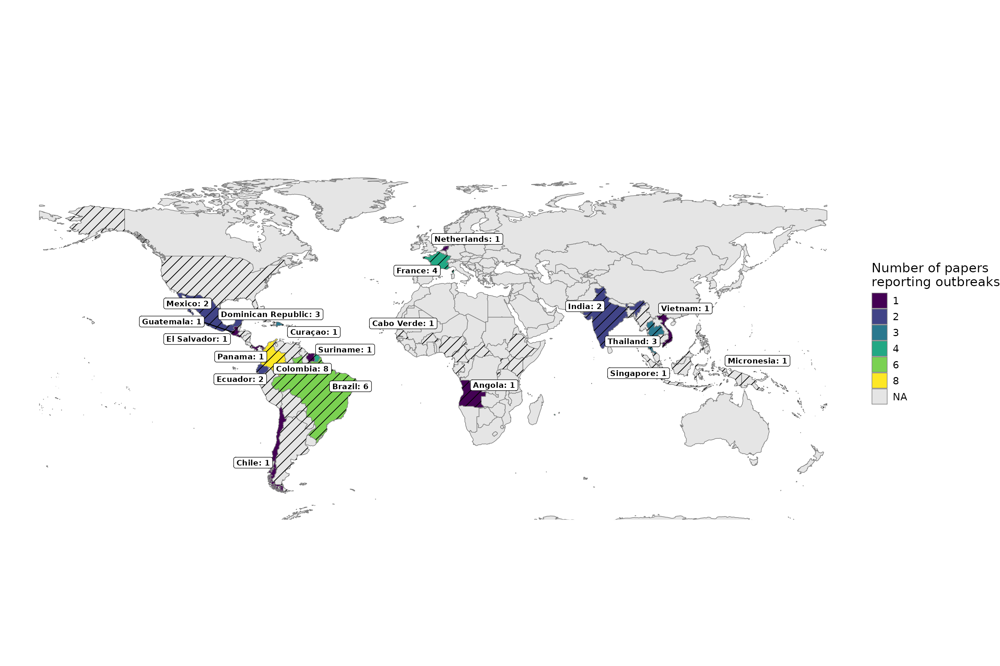

In 2018, the World Health Organization (WHO) published a list of nine known pathogens (in addition to an unknown Pathogen X) for research and development (R&D) prioritisation, due to both their epidemic and pandemic potential and the absence of licensed vaccines or therapeutics. Among these prioritised pathogens is Zika
The Pathogen Epidemiology Review Group (PERG) has published a systematic review for Zika, if you use any of our results please cite our paper:
@article{zika_systematic_review_2025, author = {Kelly McCain, Anna Vicco, Christian Morgenstern, Thomas Rawson, Tristan M. Naidoo, Sangeeta Bhatia, Dominic P. Dee, Patrick Doohan, Keith Fraser, Anna-Maria Hartner, Sequoia I. Leuba, Shazia Ruybal-Pesántez, Richard J. Sheppard, H. Juliette T. Unwin, Kelly Charniga, Zulma M. Cucunubá, Gina Cuomo-Dannenburg, Natsuko Imai-Eaton, Edward S. Knock, Adam Kucharski, Mantra Kusumgar, Paul Liétar, Rebecca K. Nash, Sabine van Elsland, Pathogen Epidemiology Review Group, Nuno R. Faria, Anne Cori, Ruth McCabe, Ilaria Dorigatti},
year={2025},
title={A systematic review of Zika virus disease: epidemiological parameters, mathematical models, and outbreaks},
doi = {10.1101/2025.07.10.25331254},
URL = {},
eprint = {},
journal = {medRxiv}
}
All Figures from the paper are re-produced below on the latest available data in our data set. For convenience we label the Figures with the same numbers as in the paper.
Figure 1: Please see the pre-print for the the PRISMA flowchart. This will remain static as data in the database is updated.
Overview of the Zika outbreaks and seroprevalence
ZIKV outbreak and seroprevalence mapping: (A) Countries with studies reporting ZIKV outbreak information, coloured by number of studies. Outbreaks reported in France and the Netherlands reflect outbreaks in overseas regions. Countries with black diagonal stripes indicate locations where ZIKV transmission has been reported by the WHO. (B) Geolocated areas or regions with ZIKV seroprevalence studies (using IgG assay, HAI/HI, MIA, NS1 BOB ELISA, IFA, capture ELISA and neutralisation assays) conducted in the general population in the Americas (left), Africa (centre) and Asia (right). Each dot represents a location-specific estimate, while shaded areas indicate estimates at the administrative unit level (region, province, district, or entire country).
Figure A: Outbreaks

Figure B: Seroprevalence
Overview of zika reproduction numbers estimates
R0 estimates by geographic location, type of sample, and population group. Sub-national estimates for Brazil, Colombia, and French Polynesia are shown in separate panels because of the high number of estimates; all other estimates are shown in the respective continent panels. Overall country estimates for Brazil, Colombia, and French Polynesia are shown in the corresponding continent panels. Points are central estimates reported in the published studies, error bars are 95% confidence or credible intervals, thicker shaded bars are ranges of central estimates over disaggregated groups. The grey vertical dotted line marks 1. When multiple estimates for the same location were available, the estimates were jittered.
Figure 3A: Basic Reproduction numbers
Epidemiological delays in human and mosquitoes.
Estimates by location and type of sample of Zika (A) intrinsic incubation period, (B) infectious period, (C) serial interval, symptom onset to admission, and symptom onset to recovery, and (D) admission to discharge/recovery. Estimates by location and study of ZIKV extrinsic incubation period in the mosquito (E). Points are the central estimates reported in the studies, error bars are 95% confidence or credible intervals, and shaded bars are ranges of central estimates over disaggregated groups.
Figure 4: Intrinsic incubation Period
Figure 4: Infectious Period
Figure 4: serial interval, symptom onset to admission, and symptom onset to recovery delays
Figure 4: Admission to discharge/recovery
Figure 4: Extrinsic incubation period
Proportion of Zika congenital syndrome (CZS)
- Estimates of reported CZS proportions from Brazil (top) and the rest of the world (bottom). Points are central estimates, solid lines are confidence or credible intervals, and shaded segments are ranges of central estimates across multiple groups. (B) Meta-analysis of CZS risk stratified by population sample type. Red squares represent the observed study effect sizes, the solid black horizontal lines are confidence intervals, and blue diamonds are the pooled estimates for each sub-group and overall. The vertical dashed line is the overall pooled estimate.
Figure 5: CZS proportion given ZIKV-infected mothers
Figure 5: meta-analysis on CZS proportion